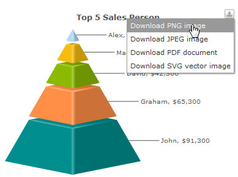

In FusionWidgets , you could export your charts/gauges as images, PDFs, and also choose whether to export at client-side or server-side.
Shown below is an example image, where users can export the chart using the context menu of chart.

When users select an export format, they get a screen as under:
Once the capturing process is complete, the data is sent to our export handlers which in turn return the image/PDF to you.
Now, before we jump into the instruction of the usage, let us first see what all can be made possible using FusionCharts Export Component.
Using FusionWidgets export charts routine, you can do the following:
- Export charts as images (JPEG, PNG) or PDFs at client-side or server-side. In either case, the chart first needs to render in browser. You cannot directly export the chart as images/PDFs on server until the chart has rendered in browser.
- When using server-side export, you can save the exported output on server's disk at a configurable location. This allows you to later embed those charts in your emails or reports.
- When using client-side export, you can use our batch export process to export all charts present on a page as a single image or PDF in just one click.
- Configure callback JavaScript functions that get invoked after the export process is completed. This helps you show a custom waiting message to the user during the chart export process and also integrate your export process with dynamic scripts and AJAX components.
- Configure cosmetic properties of the client-side export handler User Interface. The client-side export handler is the component used to convert charts as images when opting for client-side export.
FusionWidgets allows Export of JavaScript(HTML5) based charts as image/PDF.
Please take note of the few limitations regarding customizability and features, when using the pure JavaScript(HTML5) Export method, listed below:
- Pure client-side export is currently not supported
- Export component currently does not have an equivalent JavaScript fallback
- Server-side export feature requires a separate setup and implementation
When rendered using JavaScript (HTML5), there is only one mode of export - at server-side. By default, JavaScript (HTML5) charts use Highcharts server to get exported image. However you can place the PHP and JAR files on your servers and then over-ride the URL.
To know more about the present possibilities and limitations of exporting process using pure JavaScript charts, refer to Exporting Pure JavaScript Charts.